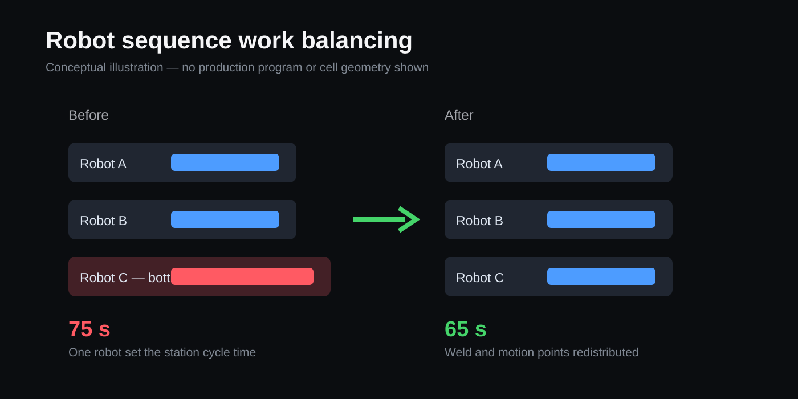

Overview
I completed an eight-month Manufacturing Equipment Engineering co-op supporting a high-volume automotive body-in-white line. My work combined robotic production support, tooling and fixture design, reverse engineering, fault investigation, and implementation around limited production-access windows.
Robot sequence optimization
One robot in a three-robot FANUC weld sequence ran roughly 10 seconds longer than the others, setting the station cycle time.
Working with two senior engineers, I used the teach pendant to transfer one weld and its associated approach and home points to an adjacent robot. We retimed shared-zone handoffs, checked the revised motion for interference, ran the sequence at full speed, and monitored stability with maintenance after release.

The station cycle time decreased from 75 seconds to 65 seconds, approximately a 13% improvement, and the updated sequence remained stable in production.
Reverse-engineered fixture system
An OEM fixture system used at eight production locations lacked usable internal CAD and carried an approximately $88,000 replacement-package cost with a quoted 10-month lead time. I reverse-engineered the physical assembly in CATIA V5 and created GD&T drawings that established a future in-house fabrication path.
- Physical-to-digital reconstruction: captured interfaces, locating features, and serviceable components from existing hardware.
- Manufacturing package: produced internal models and drawings rather than relying on unavailable vendor data.
- Claim boundary: the work created an internal build option; it is not presented as realized cash savings or eight installed replacements.
Production clamp redesign
I diagnosed a separate pick fault caused by clamp geometry contacting weld beads and allowing the part to misalign. I added a clearance chamfer, released the modified geometry for in-house machining, and supported installation. The change entered production and substantially reduced the related fault.
Additional design work — stud-welding gun checking fixture
Design objective
Create a repeatable checking fixture for tool-center-point verification across interchangeable stud-welding guns.
Status at co-op close
Design reviews and drawings were completed and released for machining. Fabrication and physical validation were not complete before the internship ended, so this is presented as an in-progress design rather than a production result.
Related case study
The most complete mechanical project from the co-op was a locating redesign carried through machining, installation, live-line validation, and production. Read the EOAT case study →